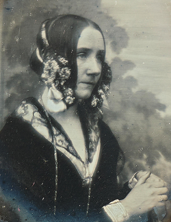
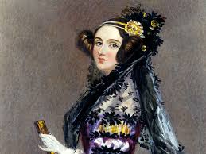

Nació el 10 de diciembre de 1815 en Londres. Era hija del poeta Lord Byron y de Annabella Milbanke, una mujer apasionada por las matemáticas. Ada heredó esta pasión. Trabajó junto a Charles Babbage en la Máquina Analítica, una de las primeras ideas de computadora. Escribió el primer algoritmo diseñado para ser procesado por una máquina. Por eso es conocida como la primera programadora de la historia. Previó que los futuros computadores podrían ir más allá de los cálculos matemáticos, anticipando música, gráficos y lenguaje, mucho antes de que existieran. Murió joven, a los 36 años, el 27 de noviembre de 1852, por cáncer de útero. Aunque su trabajo no fue valorado en vida, hoy es una figura clave en la historia de la computación. Inspira a millones de mujeres en STEM. Eventos, premios y lenguajes de programación llevan su nombre. Su visión marcó el futuro de la tecnología moderna.